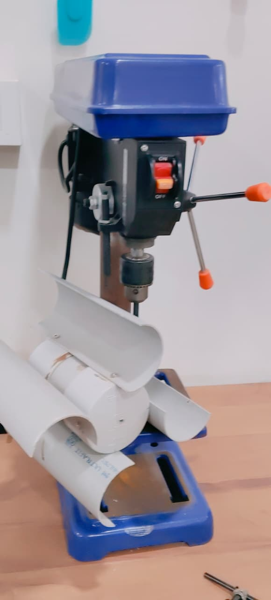
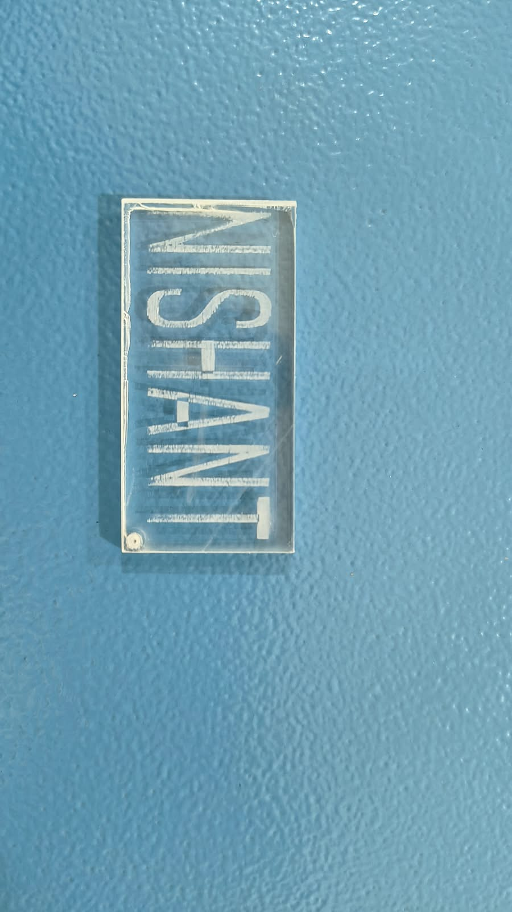
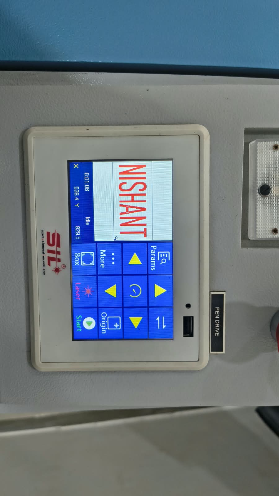

Our Project Gallery
Project Photograph 1

Project Photograph 2

Project Photograph 3

Project Photograph 4

Additional Photograph

Additional Photograph

Harnessing renewable wind energy through innovative engineering, modern manufacturing and sustainable design.
Explore ProjectVERTX is a Vertical Axis Wind Turbine project developed to demonstrate the conversion of wind energy into useful electrical energy. The turbine uses a vertically oriented rotor shaft and blades to capture wind energy.
Unlike conventional horizontal axis wind turbines, a vertical axis wind turbine can receive wind from different directions without rotating the entire turbine towards the wind. This project combines mechanical engineering, CAD modelling, fabrication, 3D printing, laser cutting and assembly.
Our main objective is to understand renewable energy technology and develop a practical model demonstrating clean and sustainable power generation.
Wind strikes the turbine blades and creates a force that makes the rotor rotate.
The rotating blades transfer mechanical energy to the central vertical shaft.
The shaft drives a generator, converting mechanical energy into electrical energy.
The generated electricity can be measured and supplied to a suitable electrical load or storage system.
Capture wind energy and produce rotational force.
Transfers rotational motion from the rotor to the generator.
Support the rotating shaft and help reduce friction.
Provides structural support and stability.
Converts mechanical rotation into electrical energy.
Connect the generator to measuring equipment or a suitable load.
Explore the digital 3D model of our Vertical Axis Wind Turbine.
Upload turbine.glb in the same folder as index.html.

3D printing is an additive manufacturing process in which components are created layer by layer from a digital CAD model. It helps produce customized components and supports rapid prototyping.


Laser cutting uses a focused laser beam to cut material according to a digital design. It provides accurate profiles, repeatable results and clean cuts.




Watch the video showing the manufacturing and fabrication process of our turbine components.
Rename your video to project-video.mp4 or change the filename in this code to match your uploaded video.
The assembly stage combines individual components of the Vertical Axis Wind Turbine into one complete system. It includes the blades, vertical shaft, bearings, supporting frame and generator.
CAD assembly helps understand component positioning, alignment and connections before physical fabrication. It also helps visualize how individual components fit together to form the complete turbine.
Our assembly work demonstrates the integration of mechanical components and the overall structure of the VERTX project.
Download Assembly FileUpload your actual assembly file in the same folder and change assembly.dlg to its exact filename if necessary.
Potential use in small renewable energy systems.
Can be explored for locations with limited electricity access.
Useful for demonstrating wind energy conversion.
Supports experiments on blade design and turbine performance.
VERTX demonstrates the practical concept of converting wind energy into electrical energy through a Vertical Axis Wind Turbine. The project brings together mechanical design, CAD modelling, 3D printing, laser cutting and assembly. It provides valuable practical experience in engineering and highlights the importance of renewable energy for a sustainable future.